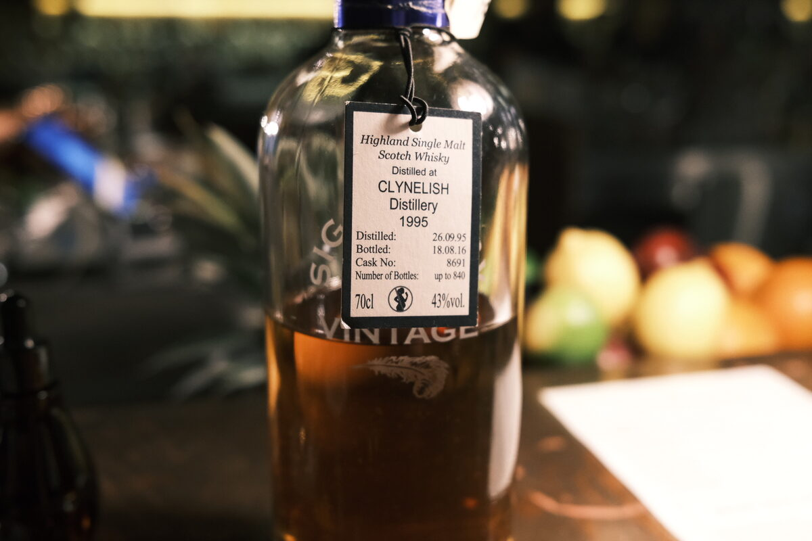

Clynelish 1995 Signatory Vintage 20 years 43%
Nice bottle. Part of Signatory’s “Decanter Collection”. A lot of what I assume to be floccing in the bottle, so unlikely to be chill filtered, even at 43 per cent ABV. Bottled in 2016, before Clynelish got weird about people using their name.
Colour Amber.
Nose Wax and apples. Classic Clynelish. Pain aux raisins. Caramel. A whack of perfume — well integrated. Melon skins. Ice cream sundaes: fatty. A bit fresh: tomato and cucumber. Some almonds.
Palate Milky texture. Orchard fruits and boiled lollies. Candlewax. Orange peel. Cinnamon and other assorted baking spices. Malty! Texture is unfortunately thinning… now we’ve got some red berries, some stemminess. A little bit of oak.
Finish Spicy — oak spices. Cinnamon and cloves. Orchard fruits and wax. A hint of tropical fruits — creamy bananas. Coconut.
Comments Disappointing. Proof does it no favours. Classic flavours but dialed down. 82/100.

Posted by Dominic on 09 May 2021